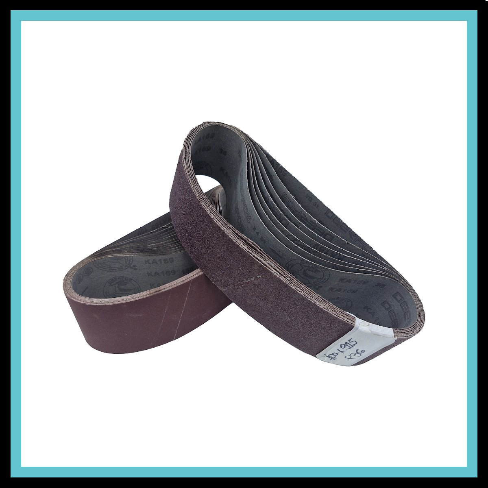

Cintas de Lixa de Óxido de Alumínio Robusta – 915x100 mm
Conheça as especificações, aplicações e diferenciais da cinta 915x100 mm, com emenda técnica reforçada por fita Mylar.
Ler artigoConteúdo técnico Robusta
Guias práticos sobre cintas de lixa, escolha de grãos, compatibilidade e desempenho para oficinas e indústrias.
Informação direta para escolher o abrasivo certo, aumentar a produtividade e obter um acabamento uniforme.

Conheça as especificações, aplicações e diferenciais da cinta 915x100 mm, com emenda técnica reforçada por fita Mylar.
Ler artigo
Um guia completo sobre conversão, compatibilidade, aplicações e personalização da cinta 686x50 mm.
Ler artigo